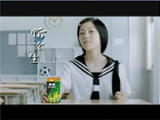
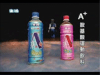

異業合作
影音動態
關於我們
產品訊息
最新公告
首頁
2026
APR.
JAN.
2025
OCT.
2023
SEP.
JUL.
2022
MAR.
2021
AUG.
JUN.
2020
2019
DEC.
2018
Feb.
2017
2016
Sep.
2015
2014
2013
2010
2009
MAY.
2008
2006

2005
2004
Dec.

2001


")


 ：contact@nulifegroup.com.tw
：contact@nulifegroup.com.tw ：0800-780-780
：0800-780-780